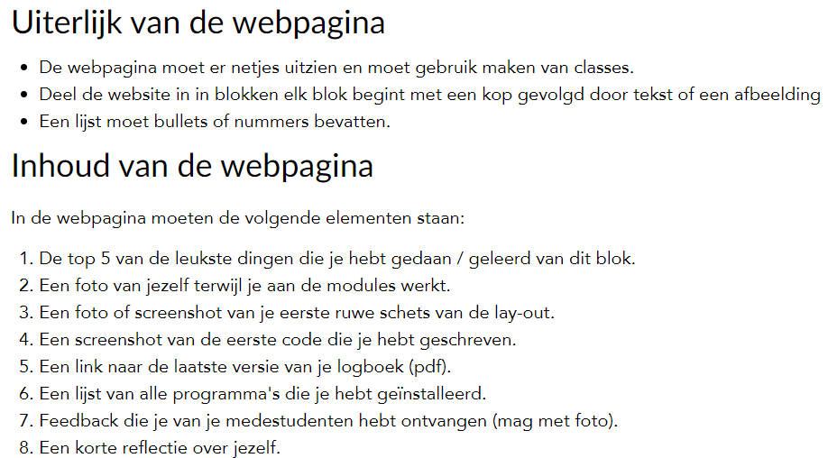
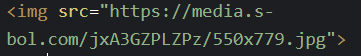
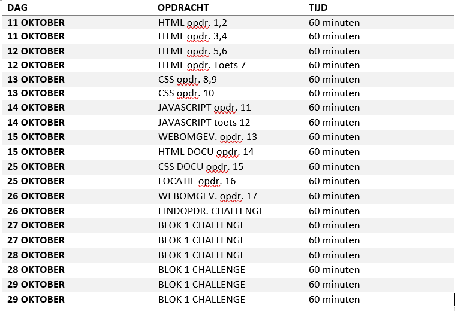
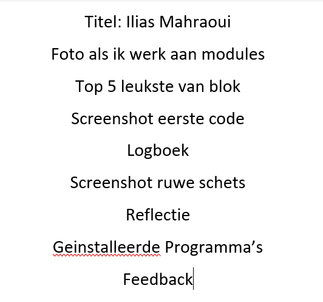
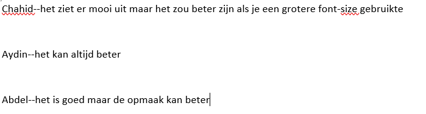

Module

Top 5
- HTML
- CSS
- IMG
- JAVASCRIPT
- WEBPAGE
Eerste Code


Ruwe Schets

Reflectie
Ik heb van dit blok redelijk wat geleerd
en van alles wat ik heb geleerd van HTML en CSS en JavaScript vind ik CSS het leukste
omdat je dan je HTML code mooier kan maken en als je geen CSS gebruikt als je een website maakt dan ziet de website er zo simpel uit
maar als je CSS gebruikt kan je de website kleur geven.
- Programma's
- Teams
- Office
- OneDrive
- Google Chrome
- 7-ZIP
- XAMPP
- VS Code
